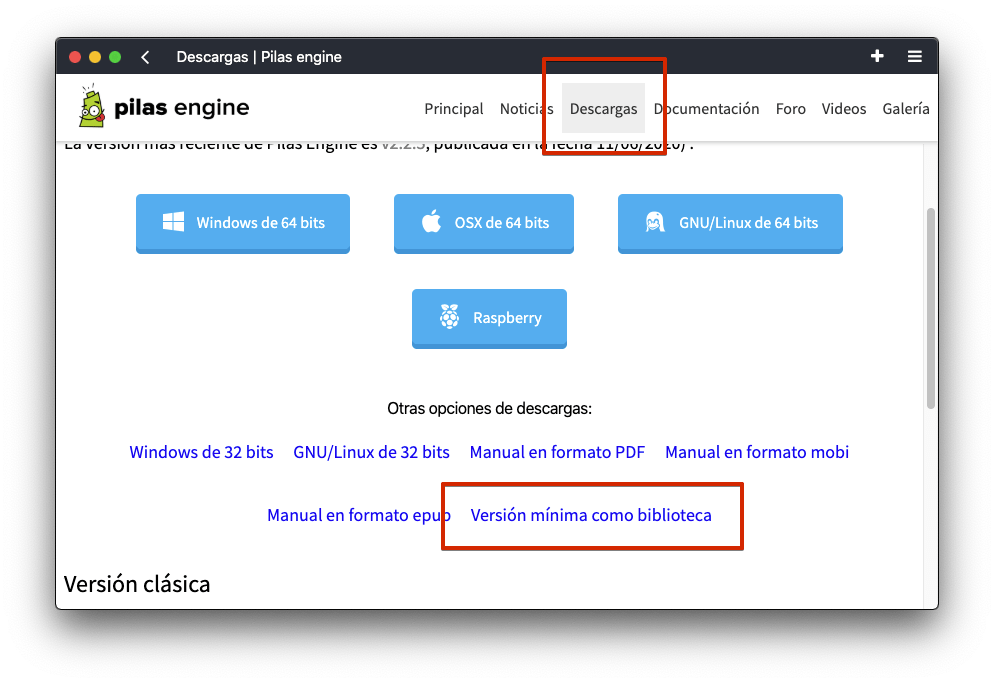
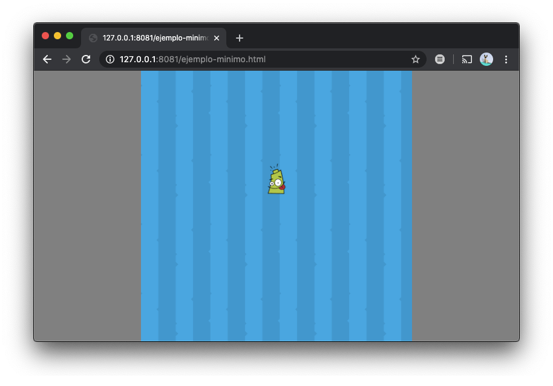

Pilas Engine можна використовувати як зовнішню бібліотеку.
У будь-якому випадку, найбільш рекомендованим варіантом розміщення вашої гри у блогах, вебсайтах тощо є дотримання інструкцій з розділу: Як експортувати ігри в .exe, web, mobile
Цей розділ рекомендовано лише для досвідчених програмістів, які хочуть інтегрувати Pilas Engine з іншими бібліотеками, такими як React, Vue і подібних, починаючи з мінімалістичного коду, без зображень, звуків або заздалегідь визначених акторів.
Щоб використовувати Pilas Engine як бібліотеку, зазвичай створюють файл .html і додають залежності проєкту, наприклад phaser і nine-slice. Тому, щоб полегшити це початкове завдання, Pilas Engine розповсюджується разом із шаблоном, який містить усі ці файли, готові та налаштовані для використання.
Перейдіть на офіційний сайт, і в розділі завантажень ви знайдете покликання для завантаження шаблону під назвою "versión-minima" (оберіть тут є більше варіантів завантаження):

Файл .zip має мінімум функціоналу ігрового рушія.
Зверніть увагу, що для використання цієї версії вам потрібно розархівувати файл .zip, потім запустити вебсервер і, нарешті, відкрити файл .html у вебпереглядачі:

Важливо використовувати вебсервер і не відкривати файл безпосередньо, оскільки Pilas (і Phaser) використовують технологію Ajax для завантаження зображень та інших ресурсів.
Щоб редагувати свою гру, вам слід перевірити файл .html, де з’явиться мінімальний код для запуску ігрового рушія, створення актора та переміщення його по екрану:
var imagenes = [
{
nombre: "logo",
ruta: "logo.png"
},
{
nombre: "fondo",
ruta: "fondo.png"
}
];
var pilas = pilasengine.iniciar(500, 500, recursos, opciones, imagenes, true);
pilas.onready = function() {
let logo = pilas.actores.actor_basico("logo");
logo.transparencia = 100;
logo
.animar()
.mostrar()
.mover_hasta(0, 50);
};Звичайно, ви можете змінити цей код і адаптувати його до своїх потреб, але не забувайте, що ця мінімальна версія не містить шрифтів, звуків і зображень, які містить повна версія Pilas Engine. Вам слід завантажити файли .png, щоб мати більше можливостей.